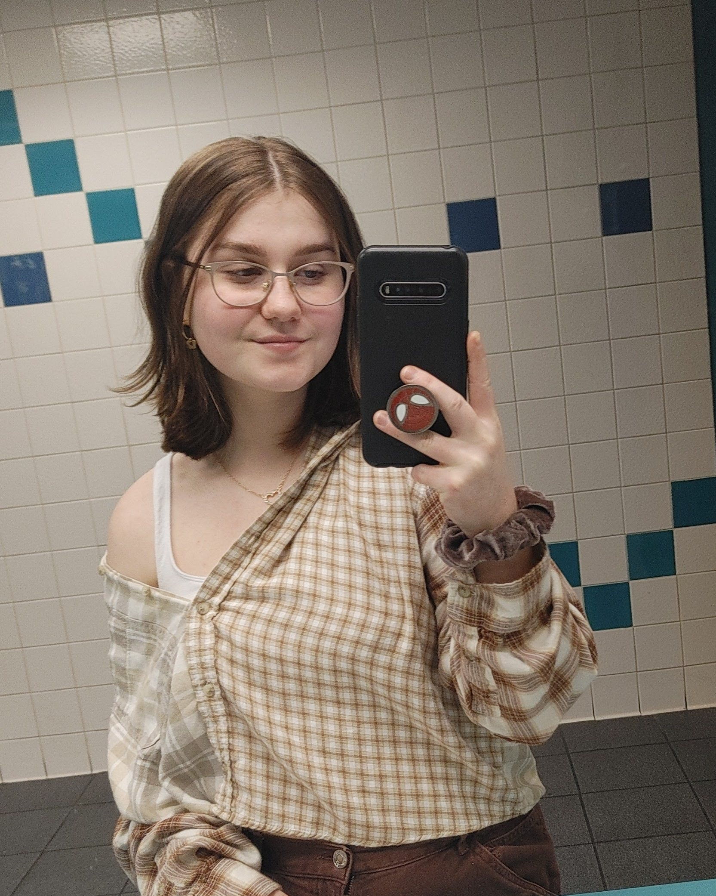

My Bio
Hi! My name is Caroline, and I am studying Software Engineering and Web Development at New England Tech. I am 19 years old and graduated high school in June of 2022. I grew up and still live in Newport, RI. I have had a strong passion for technology since I was seven. I always knew I wanted to pursue technology as a career, but I didn't decide on software engineering until I was 14. I enrolled in the Academy of Information Technology (AOIT) as a freshman, where I learned coding in a classroom environment instead of at home by myself. That year, I participated in SkillsUSA RI in the Technical Computer Applications category and received a bronze medal as a freshman, going up against seniors. The following year, the competition was canceled because of COVID.
Aside from my interest in technology, I like sports and video games. I started playing softball when I was ten and joined a travel team two years later. I was a centerfielder, second-baseman, and switch hitter. I also played tennis for a couple of years. Baseball is my favorite sport to watch on TV. I've played video games for over a decade and enjoy first-person shooter games the most. My favorite games right now are Valorant and CS2.
Schooling
- William S. Rogers High School (2018-2020)
- The Prout School (2020-2021)
- Rhode Island Connections Academy (2021-2022)
- New England Institute of Technology (2023-)
Hobbies
- Reading
- Watching Movies
- Taking Pictures
- Going for Walks
- Playing Video Games
- Hanging Out With Friends